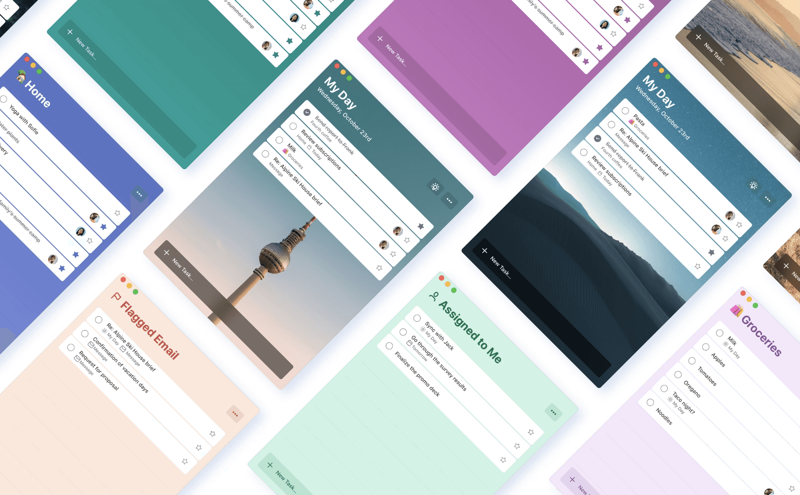
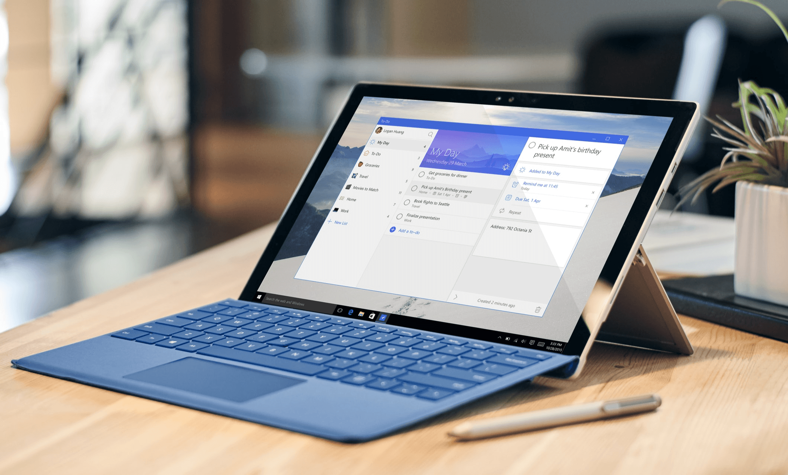
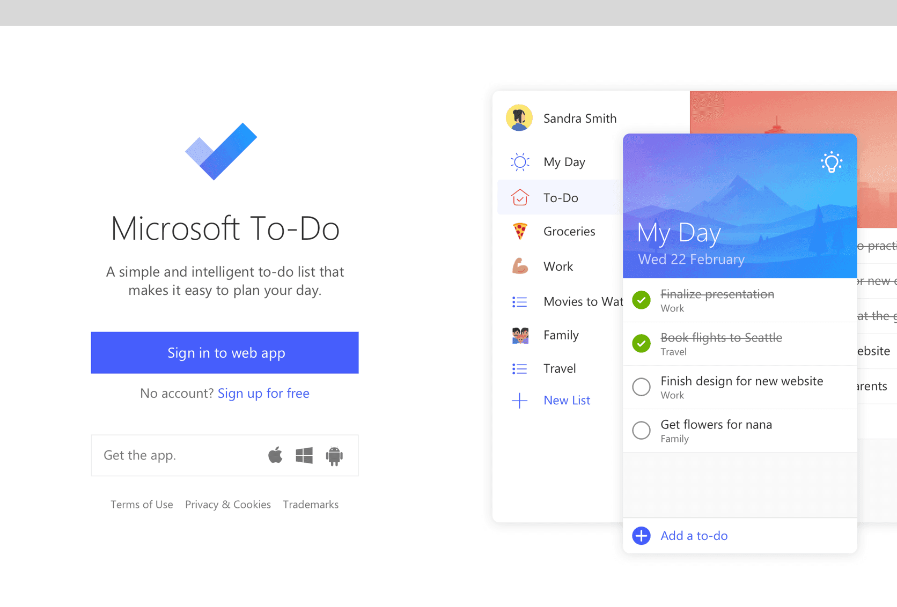

Scaling Craft. Empowering People.
At Microsoft, I shaped the design of beloved productivity tools including Microsoft To-Do, OneNote, and Outlook Sticky Notes. I helped evolve Wunderlist into Microsoft’s ecosystem, introduced a modern, cohesive design system, and crafted experiences that millions rely on daily to organize their work and life.
Download To-Do here


